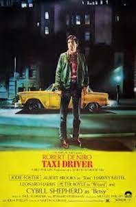

Taxi Driver Review- The Driving Force of Psychological Thriller

Taxi Driver is a psychological crime thriller the delves into the mind of a normal worker who witnesses and endures the true natures of people who are in his cab. It delves into Travis Bickles's sanity and Scorsese portrays this in various ways. It could have had more for fleshed out side characters and a more obvious descent of Travis' personality, but that doesn't mean this isn't one of the best psychological thrillers of all time.
Travis, the Taxi Driver does his daily job and endures many insane and horrible people, but one day he picks up a woman who he is attracted to because of her beauty and personality. He does things wrong in his dates with her and eventually is rejected by most of society causing him to slowly go insane. I won't spoil anymore because the psychological part of Taxi Driver is in depth and engaging. Scorsese could have made it more obvious that he was going insane at some points, but close to the end it is completely obvious. The the character arc of Travis' personality going from everyday Joe to delusion-ally believing that he was hero is all completely well made.
The side characters such as Travis' love interest and the young prostitute Travis wants to save are interesting characters, but could have been fleshed out and characterised better. The acting from all amazing, especially from Robert De Niro who plays Travis Bickle perfectly. Scorsese's cinematography really emphasises how insane Travis is becoming. The first person shots from the Taxi are also meaningful and is thought-provoking symbolism throughout the film. The pacing is fantastic giving enough to focus on Travis as a person, his descent into madness and what he does when he is deluded. The ambiguous ending is thought provoking as we don't know if Travis died, the ending is all in his head because of how deluded he is, or if it is real. The movies plot and characterisation of Travis wrap up perfectly in its conclusion.
Taxi Driver is one of the best psychological thriller movies ever made. The few issues that I had are nothing compared to this movies highs. It tells a compelling story of insanity and one the could even happen in society today. Taxi Driver is a thought provoking and perfectly directed piece of cinema that anyone who likes films must watch.